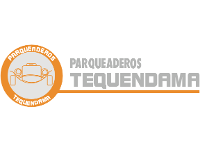
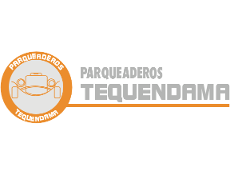

Mejor promedio de cada programa y que se encuentre cursando desde el primer hasta el último semestre, en los programas de pregrado.

Se adjudicará beca condonable no renovable hasta por el 50% del valor de la matrícula para el siguiente período académico, al estudiante que obtenga el mejor promedio de cada programa y que se encuentre cursando desde el primer hasta el último semestre, en los programas de pregrado.
En caso de encontrar dos o más estudiantes con igual promedio semestral del mismo programa, se escogerá al estudiante con mejor promedio ponderado de toda la carrera y en el caso de encontrar dos o más estudiantes con igual promedio ponderado, el beneficio se otorgará proporcionalmente entre los opcionados.
Podrá ser candidato y beneficiarse de esta beca el estudiante que cumpla con los siguientes requisitos generales:

Dirigida a estudiantes que hayan finalizado la ruta de la reintegración de forma exitosa, personas provenientes del programa de víctimas del gobierno nacional, a los huérfanos del ICBF y/o a ex miembros de la fuerza pública en situación de discapacidad, a sus familias, y a las viudas y huérfanos de la nación o que pertenezcan a poblaciones especiales (etnias) que sean admitidos en los diferentes programas de pregrado
Beca condonable y renovable hasta el 90% del valor de la matrícula, para facilitar el ingreso y permanencia para estudiantes que hayan finalizado la ruta de la reintegración de forma exitosa, personas provenientes del programa de víctimas del gobierno nacional, a los huérfanos del ICBF y/o a ex miembros de la fuerza pública en situación de discapacidad, a sus familias, y a las viudas y huérfanos de la nación.
Estas becas serán otorgadas en alianza con entes gubernamentales y/u ONG's que además apoyen en la búsqueda de los beneficiarios y aseguren la idoneidad de sus perfiles.
Beca condonable y renovable hasta el 50% del valor de la matrícula, para facilitar el ingreso y permanencia para estudiantes que pertenezcan a poblaciones especiales (etnias) que sean admitidos en los diferentes programas de pregrado. Estas becas se adjudican por parte del comité de becas y estímulos dependiendo el presupuesto disponible de la Universidad.

Ayuda económica, que la Universidad proporciona a los estudiantes de pregrado que cursen desde segundo semestre en adelante, con mérito académico y comprobada necesidad socioeconómica.
Ayuda económica, que la Universidad proporciona a los estudiantes de pregrado que cursen desde segundo semestre en adelante, con mérito académico y comprobada necesidad socioeconómica, equivalente hasta con el 25% del valor de la matrícula, y podrán mediante revisión periódica ajustar estos porcentajes según la disponibilidad presupuestal del programa.
Estas becas son condonables y podrán ser de carácter renovable o no, de acuerdo a la disponibilidad de recursos del Fondo General de Becas de la Universidad y se mantendrán con el cumplimiento de los siguientes requisitos:
Se adjudicará beca condonable no renovable hasta por el 50% del valor de la matrícula para el siguiente período académico, al estudiante que obtenga el mejor promedio de cada programa y que se encuentre cursando desde el primer hasta el último semestre, en los programas de pregrado.
En caso de encontrar dos o más estudiantes con igual promedio semestral del mismo programa, se escogerá al estudiante con mejor promedio ponderado de toda la carrera y en el caso de encontrar dos o más estudiantes con igual promedio ponderado, el beneficio se otorgará proporcionalmente entre los opcionados.
Podrá ser candidato y beneficiarse de esta beca el estudiante que cumpla con los siguientes requisitos generales:
Beca condonable y renovable hasta el 90% del valor de la matrícula, para facilitar el ingreso y permanencia para estudiantes que hayan finalizado la ruta de la reintegración de forma exitosa, personas provenientes del programa de víctimas del gobierno nacional, a los huérfanos del ICBF y/o a ex miembros de la fuerza pública en situación de discapacidad, a sus familias, y a las viudas y huérfanos de la nación.
Estas becas serán otorgadas en alianza con entes gubernamentales y/u ONG's que además apoyen en la búsqueda de los beneficiarios y aseguren la idoneidad de sus perfiles.
Beca condonable y renovable hasta el 50% del valor de la matrícula, para facilitar el ingreso y permanencia para estudiantes que pertenezcan a poblaciones especiales (etnias) que sean admitidos en los diferentes programas de pregrado. Estas becas se adjudican por parte del comité de becas y estímulos dependiendo el presupuesto disponible de la Universidad.
Ayuda económica, que la Universidad proporciona a los estudiantes de pregrado que cursen desde segundo semestre en adelante, con mérito académico y comprobada necesidad socioeconómica, equivalente hasta con el 25% del valor de la matrícula, y podrán mediante revisión periódica ajustar estos porcentajes según la disponibilidad presupuestal del programa.
Estas becas son condonables y podrán ser de carácter renovable o no, de acuerdo a la disponibilidad de recursos del Fondo General de Becas de la Universidad y se mantendrán con el cumplimiento de los siguientes requisitos:

Buscamos formar grandes profesionales y dar apoyo económico a estudiantes de escasos recursos con un alto rendimiento académico, beneficiando su calidad de vida a través de su formación de pregrado y del entorno universitario que ofrece nuestra institución.
Buscamos apoyar las carreras en el marco de las industrias creativas y la cultura como un motor de desarrollo para el país.

Para evitar la deserción de jóvenes destacados por su desempeño académico en la vida universitaria, la Fundación Bolívar Davivienda ha creado el programa Becas Crédito por la Excelencia, que está dirigido a estudiantes de pregrado con altas calificaciones, que se encuentren cursando entre 5to y 8vo semestre, y que estén atravesando por dificultades económicas que les impidan la continuidad de su proceso formativo.

Aquí podrás consultar si has sido elegido como beneficiario de alguno de nuestros Apoyos Económicos
 
